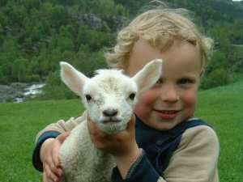

Tilboda våre, alle inkluderte i prisen, er fred og ro, aktivitet, moro, menneskekontakt, kontakt med dyr, kontakt med natur.

Wi-fi. Me pleier ofte seia at det er eit tilbod at me ikkje har TV. Vatnet de drikk på garden kjem frå eige oppkomme og har
fått førsteklasses resultat ved analysar. Straumen de brukar vert produsert av vårt eige miljøvennlege vasskraftverk. Du kan
gjerne få ei synfaring der.
Heilskapsopplevinga av Fossane er med og lagar ferien dykkar, og ferien dykkar er med på å laga Fossane. Velkommen til oss!